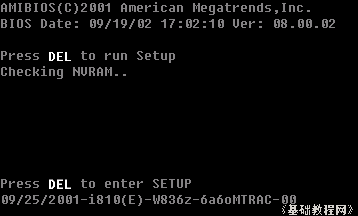
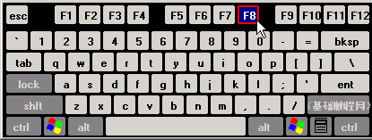
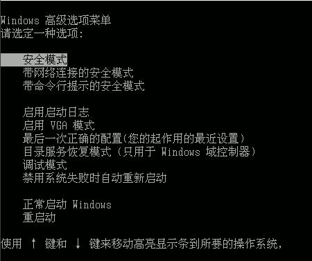
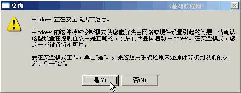
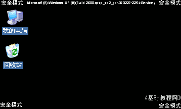

电脑操作基础
三十四、安全模式 返回
当机子出问题或者中病毒后，往往不能正常进入系统，这时候可以试试安全模式，下面我们来看一个练习；
1、开始菜单
1）开机以后，开始屏幕是黑色背景的，注意键盘上的灯会闪一下，屏幕下面会出来一个白色的“DEL”，

2）这时候按一下键盘最上面一排的F8键，可以按上两三下，然后耐心等待；

3）稍后会出来一个系统菜单，第一个就是“安全模式”，安全模式只加载必要的系统程序，可以用来修复一些错误；(图片来自黑马动力在线)

4）用上下方向键，选择不同的启动项，这儿选择第一个“安全模式”，然后按回车键继续，
这时候左上角出来一个光标一闪一闪，背景还是黑色的；
5）这时候需要较长的时间，如果长时间只有光标闪动，可以试着按几下回车键或ESC键，然后再等一会；
6）当所有文件加载完毕后，会进入一个有些虚的桌面背景，屏幕也可能闪几下，然后出来一个对话框，提示将要进入安全模式；

7）点“是”进入安全模式，这时候桌面的四个角上都有一个“安全模式”的字样提示；

8）安全模式当中，启动项里的程序不会加载，这样默认的杀毒软件、防火墙等都不会运行，可以在开始菜单里找到运行，
也可以运行一些系统修复工具，来对系统进行修复和检测；
本节学习了在WinXP中进入安全模式的基本方法，如果你成功地完成了练习，请继续学习下一课内容；
本教程由86团学校TeliuTe制作|著作权所有
基础教程网：http://teliute.org/
美丽的校园……
转载和引用本站内容，请保留版权信息和本站链接。